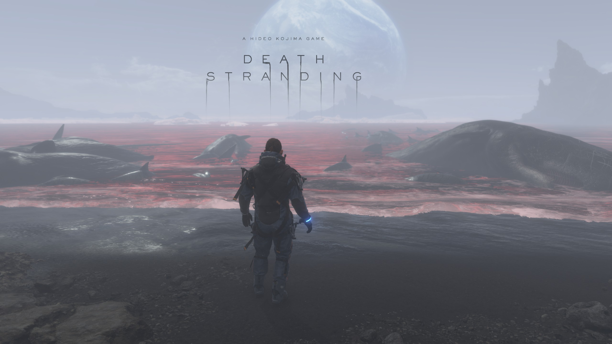
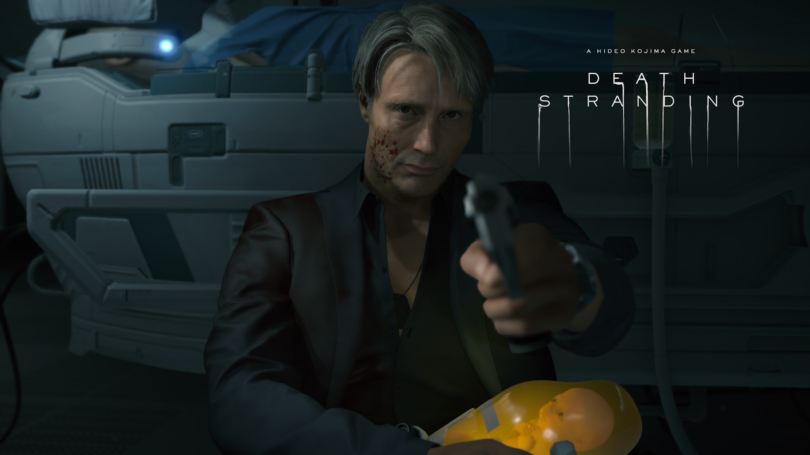
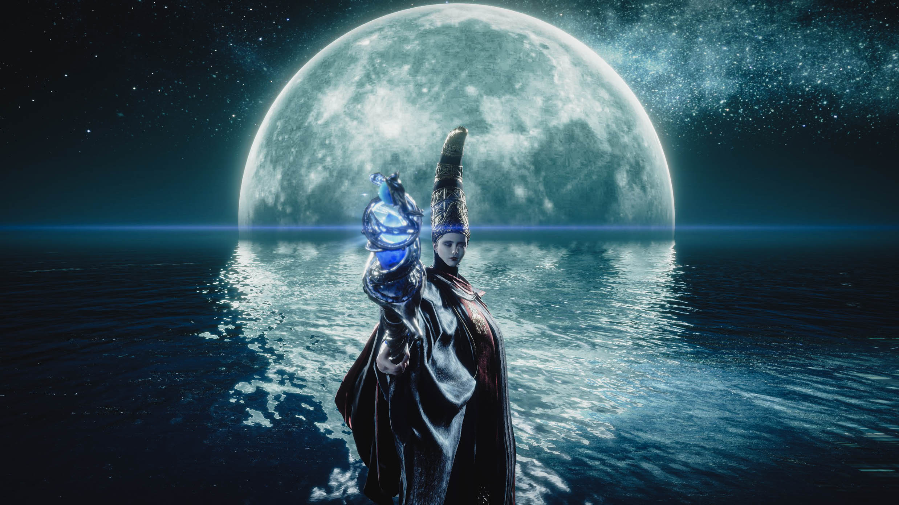
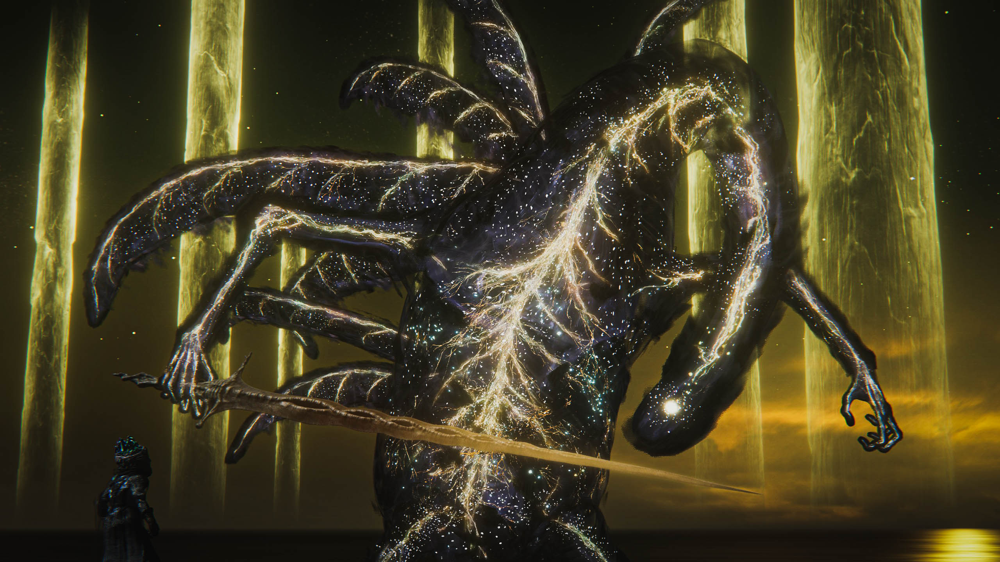
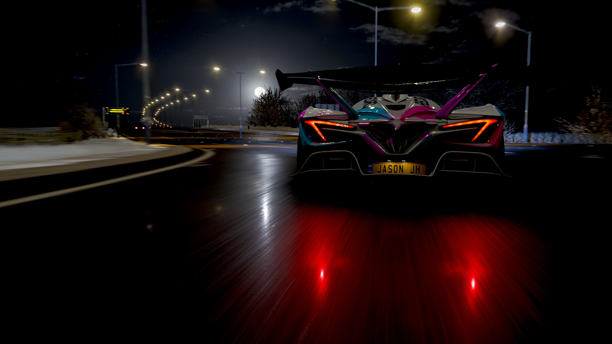

From legendary game creator Hideo Kojima comes an all-new, genre-defying experience. Sam Bridges must brave a world utterly transformed by the Death Stranding. Carrying the disconnected remnants of our future in his hands, he embarks on a journey to reconnect the shattered world one step at a time.

DeathStranding 1

DeathStranding 2
Elden Ring
THE NEW FANTASY ACTION RPG. Rise, Tarnished, and be guided by grace to brandish the power of the Elden Ring and become an Elden Lord in the Lands Between.

EldenRing 1

EldenRing 2
Forza4
Dynamic seasons change everything at the world’s greatest automotive festival. Go it alone or team up with others to explore beautiful and historic Britain in a shared open world. Collect, modify and drive over 450 cars. Race, stunt, create and explore – choose your own path to become a Horizon Superstar.

Forza4 1Forza4 2Forza4 3
EldenRing Game Review
In the 87 hours that it took me to beat Elden Ring, I was put through an absolute wringer of emotion: Anger as I was beaten down by its toughest challenges, exhilaration when I finally overcame them, and a fair amount of sorrow for the mountains of exp I lost along the way to some of the toughest boss encounters FromSoftware has ever conceived. But more than anything else I was in near-constant awe – from the many absolutely jaw-dropping vistas, the sheer scope of an absolutely enormous world, the frequently harrowing enemies, and the way in which Elden Ring nearly always rewarded my curiosity with either an interesting encounter, a valuable reward, or something even greater. FromSoftware takes the ball that The Legend of Zelda: Breath of the Wild got rolling and runs with it, creating a fascinating and dense open world about freedom and exploration above all else, while also somehow managing to seamlessly weave a full-on Dark Souls game into the middle of it. It shouldn’t be a surprise to anyone that Elden Ring ended up as one of the most unforgettable gaming experiences I’ve ever had.
To set the stage, all you know from the outset is that you play as a “Tarnished” of no renown, blessed by grace, and are compelled to make the journey to The Lands Between and become an Elden Lord. What that actually means, how one might go about doing that, and what the deal is with that giant glowing golden tree are all things that you have to discover yourself. Like other FromSoft games, the grand story is hard to fully digest on a first playthrough, especially because there’s no in-game journal to refresh you on the events, characters, or unique terms you encounter across dozens of hours. There really should be, but it is a story I nonetheless enjoyed trying to piece together for myself. I look forward to supplementing that knowledge with the inevitable painstakingly detailed lore videos that emerge from the community later.